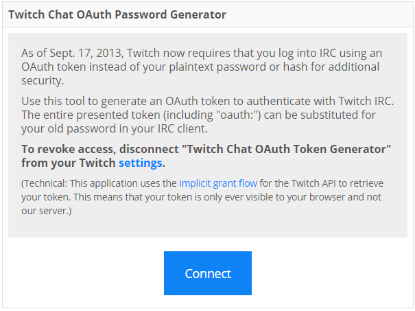
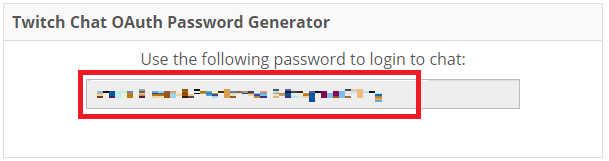

<head>
  <meta charset="utf-8">
  <title>방송 변수 설정</title>
  <style>
img {
  max-width: 100%;
}

.help,
.help-modal {
  display: none;
}
.help:checked + .help-modal {
  display: block;
}

.help-modal {
  position: absolute;
  background: white;
  border: 1px solid;
  padding: 20px;
  max-width: 100%;
  box-sizing: border-box;
  left: 0;
}

.label-text {
  display: inline-block;
  min-width: 120px;
}
.input[type="text"], .textarea {
  min-width: 200px;
}
  </style>
</head>
<body>

<div id="wrapper"></div>
<script src="./lib/dom.js"></script>
<script src="./js/input-form.js"></script>
<script>
const secretItems = [
  {
    name: '인증토큰',
    label: '인증 토큰',
    id: 'token',
    type: 'text',
    default: '',
    placeholder: 'oauth:xxx... 자세한 사항은 도움말 참고하세요',
    pattern: '(oauth:)?[0-9a-zA-Z\\-_]{30}',
    help: `
<a target="_blank" href="https://twitchapps.com/tmi/">토큰 얻으러 가기</a>
<p>위 링크에 들어간 후 다음의 절차를 따르세요</p>
<p></p>
<p>Connect를 누릅니다. 트위치 로그인을 하고 앱 등록 허용을 해줍니다.</p>
<p></p>
<p>위 부분을 복사하여 붙여넣습니다.</p>
    `,
    mandatory: true,
    parse: value => {
      const [oauth, token] = value.split(':');
      if (token) return token;
      return oauth;
    }
  },
  {
    name: '트위치 아이디',
    label: '트위치 아이디',
    id: 'twitch-id',
    type: 'text',
    default: '',
    placeholder: '트위치 아이디',
    mandatory: true,
    parse: value => {
      try {
        const url = new URL(value);
        return url.pathname.slice('/');
      } catch (err) {
        return value;
      }
    }
  }
];

const ids = secretItems.map(item => item.id);
const parses = secretItems.map(item => ({ [item.id]: item.parse })).reduce((r, c) => Object.assign(r, c), {});

var wrapper = document.querySelector('#wrapper');
var form, button;
wrapper.appendChild(
  form = dom('form.form',
    dom('ul.form-list', secretItems.map(item => InputForm(item))),
    dom('button', 'secret.js 생성하기'),
    dom('p', '다운 받아서 config 폴더에 넣어주세요.')
  ),
);
form.onsubmit = e => {
  e.preventDefault();
  var result = {};

  // 으아악
  ['token', 'twitch-id'].forEach(id => {
    result[id] = parses[id](form[id].value)
  });

  var token = result['token'];
  var twitchId = result['twitch-id'];
  var secretJsFileContents = secretJsFileTemplate(token, twitchId, twitchId);

  var file = new File([secretJsFileContents], 'secret.js', {
    type: 'application/javascript;charset=utf-8'
  });

  var a = dom('a', { href: URL.createObjectURL(file), download: 'secret.js' })
  a.click();
}

const secretJsFileTemplate = (token, nickname, channelName) => `// DO NOT EDIT!
// use config.html
// 수정하지 말고 config.html 을 열어서 다운로드 후 덮어씌우세요
const TOKEN = '${token}';
const NICKNAME = '${nickname}';
const CHANNEL_NAME = '#${channelName}';`

</script>

</body>
